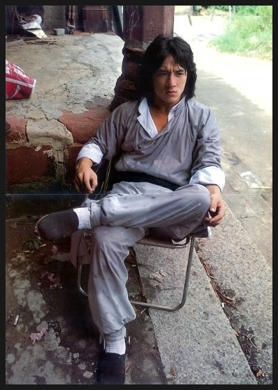

Everybody Needs a Break Sometimes
Inspired by this photograph

He burns with thought,
a venerable stone building
frames him.
He’s paid to play pretend
but the cigarette butts & unkempt street
are real now.
His fight scene
had gone wrong.
He was to dodge the left hook, sweep the leg.
But the enemy didn’t jump the sweep,
& down he went.
Face met flowery tea cup,
cutting a thick, deep gash,
a spray of blood.
His enemy knew what should have happened.
But he did it,
he made leg crash into leg.
The closed eyes, broken face
won’t leave him.
"Jackie, you’re on."
The Book of the Hacker (Desire)
Live as if you were digital.
Inspired by The Book of the Dead Man by Marvin Bell
1. About the Hacker and Desire
The hacker does not know where he finds himself.
On one of his morning exploits, he sees writing in a foreign tongue that
reminds him of Russian, but sharper.
The hacker finds himself in The Ukraine, he stares blankly at his green on
black terminal; his window into that much larger than him.
The hacker stands in a river of information.
He finds an open webcam and sees a newborn baby, eyes twinkling in the light of the LCD.
The hacker now sits at the top of a financial empire in the heart of Wall Street.
Now the hacker reads an email about a graphic car crash, picture included.
He is briefly in the memory banks of the people he intrudes on.
The hacker wonders how long he will remember his acquaintances.
An annoying accident finds the hacker at his own server.
2. More About the Hacker and Desire
The hacker has no family, he doesn't need one.
He abuses the follies of man and machine.
The hacker is excited over the idea that his curiosity may be boundless.
He dons a hat of healthy grey.
For the hacker, a simple command can ripple out into the physical world.
To the hacker, the internet is a sticky copper spiderweb.
To the hacker, data is the oil, the blood, the gold.
To the hacker, the transistor is the basic unit of life.
The hacker yearns for dense cityscapes and lively coffee shops.
The hacker thinks of the shoulders he stands on: Alan Turing, Dennis Ritchie, Ada Lovelace, GeoHot, Solo, C0mrade, TeaMp0isoN and wants others on his.
The hacker is proud of his shrouded work.
The hacker has seen technologies come and go just as he has seen people, policies, regimes and parties come and go.
Chinese Fall
Inspired by Tomas Tranströmer
The rose with a single thorn,
intentionally untrimmed,
bites the victim.
Their wince is candy.
Shining Chinese gorge, between
Wu Shan and Ba Dong.
In the distance,
a roiling thunderstorm
narrows its eyes.
Organ, with endlessly complex pipes,
smooth ivory keys.
Hides itself from the listener,
shows only false, hollow exterior.
Blares loud, cacophonous Messiaen chords.
Burs in my brother's shoes,
hours of incessant itching
will show him.
How dare he
take my Pokemon cards.
This Poem Is Not About Cara
The whore cries,
“I'm your little bitch”
in that whiny, grating,
“I'm about to fake
an orgasm” squeal I've
heard a hundred times
before, but never from
this side of the
bedroom door.
Fuck...
Fucking Fucking Fuckity Fuck!
Blinded by tears and screaming
along at 60 miles an hour,
I'm going home to my bed.
For a month, the world had ended.
It felt like my pores
oozed black slime.
I finally let myself go out
to a bar, and mope at
anyone that would listen.
“Hey buddy, that sucks.
Let me buy you a beer.”
We talk about our ex girlfriends
and he knows the feeling all too well.
The night goes on, and
I've made a friend.
"Friday I'm in Love"
is that song from high school
I never want to hear again and
Anastasia is the girl who gave it to me.
Her parents fled cold, careless
Putin when she was 8.
Our love came quickly.
At the choir camp bonfire
we whispered our first
sweet “I love you”s under
the burning harvest moon.
Six months later, after we broke up
and got back together
she said, “We have fun, right?”
to cut the long silence of
our downtown stroll.
“No.” I thought,
“I think we do” I said.
One year later, as we sobbed
knowing it was over,
light rain fell from the
coolly blackened sky,
washing away our love.
I drove her home.
One weekend on a choir trip,
I met Cara.
Our love came quicker.
The night we met was spent
learning about each other under
the pin pricks of light in the
chillingly clear mountain night sky.
We ritualized Fridays,
giving them entirely to one another,
our weekly spikes of love.
Six months later, I found
Cara in the corner of my
little blue bedroom,
rocking back and forth,
trying desperately to rid her mind
of depression and anxiety.
I frowned and held her.
One year later, late at night
Cara and I wandered down to a dock.
We talked about beauty and
how far we'd come.
As rain began to fall,
we ripped each other's clothes off.
Mother
Inspired by "Mother" by Paula Meehan
mother florist
maternal mother
you raised me right
you let me go
mother nuturer
bearer of my blankie “May”
kitty cat caretaker
threadmatrix seamstress
mother sharer
of book and bowl
teaching me to learn
pouring morning cereal
mother home and cradle
your two eyes beaming
light and whimsy
when you made me
mother you made family
you and your lion companion
you and your dens
you and your meditation
mother your textiles
your candles your rugs
your grouting your paint scraping
your tomatoes your lettuce
mother raising a house of plants
you grow from soil
through tireless care
and much love
mother your gardens
your greens your veggies
with your thistles
mother cat I'm you're kitten
mother naturalist
home maker
traveler and tranquil
in the summer sun
mother you call
I hear your venom
and your disapproval
and I scream
The Most Feelings I've Ever Felt Walking to my 8 AM Poetry Class with Jordan Smith on a Wednesday Morning
Moonlit morning walk into class
Groggy students drift to 8 Ams
Venerable oak, rustling overhead
Just then
An acorn falls
Strikes me square on the head
Fucking squirrels